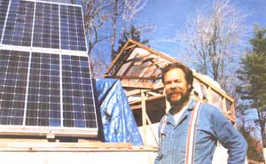
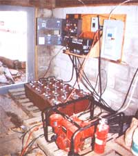
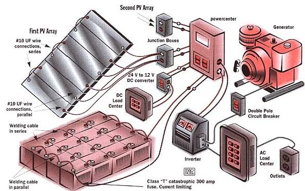
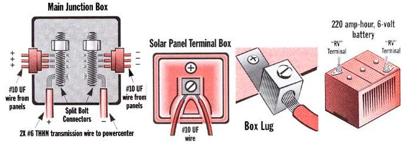

ENERGY & ENVIRONMENT
Despite short days and long, cold winters, Kip Tewksbury has powered up
his solar home-in Vermont!
Kip Tewksbury is building his dream house in the Green Mountains of southern Vermont. The construction site, located in a small clearing on top of a 1,000-foot hill is pretty typical; table saws and planers grind away and lights illuminate the work in the upper floors during the dark afternoons of mid-November. It takes a little while, though, to notice that there are no power lines heading to his house from the street and no meter on the exterior wall recording power use. In fact, the nearest utility pole is the better part of half a mile down the road.
Kip has declared war on the waste and expense of utility power. He is building his home and will eventually power it using the energy of the sun, avoiding a lifetime of electric bills and utility hassles. His 12 photovoltaic panels produce enough power to keep all their appliances running, even heavy electric tools. With no formal training in either electronics or solar power, Kip was able to bring himself up to speed and install most system components himself in a matter of days. In this second part of a continuing series on alternative energy, we'll tell you Kips story and show that providing solar energy for your new home is both an economically and environmentally beneficial alternative. -MOTHER
MOTHER:The frame is impressive. Those timbers look as if they'll last a few years.
KT: Most of them have already been in service for 100 years or so. They're actually from a 200-year-old Amish summer kitchen that was recently taken down in Pennsylvania. The Amish build communal kitchens because they cook with wood. They don't even use solar electricity that I'm aware of. And in the summertime, rather than overheat everybody's house with a wood stove, each community has a central summer kitchen where they can do all their cooking. Then they can go back to their own homes and stay a little cooler. A friend knew I was looking for cheap timbers and offered them to me, and I traded some longer barn timbers for them. I've added some new ones as well, but for the most part it's a recycled frame.
MOTHER:And you built the foundation and frame yourself?
KT: My stepson, who's 27, has helped a lot. We've done most of the work so tar.
MOTHER:When did it dawn on you that solar power was a good idea for this location? Vermont isn't exactly a ideal garden spot as far as sunshine is concerned.
KT: My father and I acquired some land in Marlboro about three years ago. I'd wanted to build a home for my wife, Debbie, and me for some time. New land, a new home-it seemed the perfect occasion to build. I knew the site was going to pose some challenges though. Chief among them was how to provide electric service to the lot since the nearest utility pole is about 2,000 feet down a steep mountain road.
At that time I hadn't the faintest idea what kind of costs are involved in a utility grid extension, so when the local utility examined the site and quoted me a price of $15,000 to run in electricity, I had to rethink everything. I was confronted with the possibility of not being able to build on a beautiful site simply because I couldn't afford to service it. I just wasn't operating with a budget that would even begin to allow that extra expense. I needed some options.
So I grabbed as much information as I could on alternative energy and attended a few seminars in the area, where I eventually met Richard [Gottlieb, president of Sunnyside Solar in Brattleboro, Vermont]. After a few conversations with him, photovoltaics looked like a plausible idea, not just from a "living lightly on the Earth" standpoint-not having to have as many nuclear power plants, etc.- but simply because it let us keep some money in our pocketbooks.
MOTHER:Did the utility offer the possibility of spreading payments over time?
KT: Sure. But what's the good in going broke slowly? In fact, by the time I included the costs of burying the power lines underground to keep utility poles out of sight, it was going to be around $18,000. I couldn't afford it then or sixty years from now. But more importantly, it was just galling. Paying through the nose for the privilege of then paying monthly for my electricity. Forget it.
The photovoltaic system you're now looking at cost $9,200. I'm no electrician, but I was able to piece most of the system together myself in a couple of days. And as far as I'm concerned, it paid for itself immediately because it allowed me to build my home where I wanted to build it.
So up it went, and as soon as I get the insulated exterior walls in place, I'll be able to heat and cook with the wood stove while getting electricity from the panels.
You're right about the weather though. It can be pretty nasty. But even this October and November, which have been lousy for solar-a lot of rain and whatever-haven't troubled the system very much. After a few cloudy days in a row the battery banks do start to run a little low, so I run the gasoline generator for a little while to recharge. That doesn't happen very often though. As long as you design the solar system with weather conditions in mind and size it accordingly, there won't be any problems.
MOTHER:How did you size the system? How did you determine the number of solar panels in the first place?
KT: First, I took a workshop on photovoltaics. Part of the program was a basic introduction to sizing. In essence, sizing is no more than looking at the appliances you're likely to have, their consumption per hour in watts (which is usually listed right on the appliance), and the number of hours you're likely to use them in a day.
For instance, I have a stereo system that I know is going to run for a couple of hours each day. I also have a large television set, VCR, etc. I just added them up. I found that those appliances, plus a few others, plus lighting and water pumping from my well demanded approximately 1.5 to 2 kilowatt-hours each day. I even did some figuring for different times of the year. In the summer, you may use different appliances; winter requires more lighting, etc.
Actually, one of the biggest hogs is our coffeemaker. Any heating element uses a lot of power. But it's only on five minutes a day when we make breakfast in the morning, so it's overall impact is very small. Richard [Gottlieb] then helped me to design a system of 12 solar modules working together. Each module generates about 50 watts of DC electricity for every hour of direct sunlight it's exposed to. Fifty times 12 equals 600 watts. That's the amount of power my solar system produces for each hour of direct sunlight.
During the spring, summer, and fall, I'll probably be generating 2.5 to 3 kilowatt-hours each day-more power than I need. But during the worst part of winter, I might only get 1 kilowatt-hour, so I may have to run the generator once a week to top up the battery bank.
MOTHER:What happens on a cloudy day? Do you break even if you use no electricity?
"I was confronted with the possibility of not being able to build on a beautiful site simply because I couldn't afford to service it. I needed some options."
Kip decided to store all his power equipment together in the basement. Batteries are placed on a heavy wooden skid both to protect them from any water on the floor and to allow proper air circulation. The powercenter, Inverter, AC- and DC- load centers are all rack mounted for ease of access. During construction, Kip is content to run the generator in the open basement and keep the batteries uncovered. When the house is occupied and the basement enclosed, the generator will have to be housed in an external shed where its fumes will not be a hazard and the battery bank covered to prevent accidental discharged from dropped metal, tools etc..
The diagram at below shows basic wire configuration as well as series and parallel arrangements in the battery bank and solar array. Kips system has two sets of six panels, wired identically and connected to the power center through two junction boxes and 2X #6 THHN wire.
The most convenient power for Kips home is 120 volt AC, fed to the AC-load center and home outlets through the Inverter. He has some specific DC needs, however, such as his DC-well water pump which can be supplied directly from the powercenter. A 24-volt DC to 12-volt DC converter and DC load center is required.
See "How Kip Did It." for a guide to wire sizes and connections .
Scott MacNeill
Installers are encouraged to familiarize themselves with article 690 of the National Electric Code (NEC), dealing specifically with photovoltaic equivalent, before installation.
KT: No. You'll be drawing off the bank. It's like a savings account, if you're not putting money in ....
If it's cloudy, the panels will produce about 5% of their normal output-an amp or two. And when it's really cloudy, or after 3 o'clock when the sun dips below the ridge to the west, if I'm getting 2 amps, I'm lucky. If I'm only running lights in the house, I'm not drawing very much. But if I'm also running any tools, then I'm dipping into my savings account and running a deficit.
Twenty-two amps is the most I've gotten at any one reading. It averages-this time of year anyway-about 17 amps at any particular sunny moment.
MOTHER:Any other problems in winter?
KT: The direction of the light often poses some problems during the short days. The sun is lower in the sky and I have to be
careful about the trees creating shadows. Today at about noon, the sun was starting to shine on the modules through one of the trees, and instead of getting 18 amps out of the system, it suddenly went down to like 7.5 to 8. I looked at the meter and said, "Wait a minute. It's sunny out. What's going on?"
I ran around and looked at the panel and noticed the shadow of the tree across it. Shadowing even small portions of the panel changes many of the solar cells from producers into laggards. These few can reduce the efficiency of the whole array considerably. I mean, that's an area where technology definitely needs to work on it some more, I think.
MOTHER:I noticed some compact fluorescent bulbs in the work areas and basement. Do they really make a difference?
KT: Without them I could not afford to use my solar system, period. I've measured their output, because there's a meter down in the basement that reads the power flowing from the batteries all the time. If I turn on an incandescent light, it will read 3 to 3.5 amps of output. If I turn on a compact fluorescent, it's 0.6 amps. I can have five of them on, which is more than the house will ever need, and equal the consumption of one incandescent bulb.
Conventional fridges are tough on the system, too. I'll need to shop for a more efficient model than most homes use.
MOTHER:Right now you're planning on a propane water heater for the house?
KT: Yes. A propane water heater and a wood stove for heat. The refrigerator might end up being propane, too. It makes sense. We'll only need to fill the tank twice a year, it's on the outside of the house so we'll feel safe and save on space, and it's relatively inexpensive.
MOTHER:So power flows from the modules to a battery bank in the basement?
KT: That's right. Power flows from the batteries to the powercenter and then into the batteries. We then draw power from the batteries when we need it.
MOTHER:What purpose does the Powercenter serve?
KT: Mostly it regulates the flow of electricity going into the batteries so that you don't accidentally overcharge them. It also helps to regulate power coming out of the batteries and it also contains a surge protector just in case the solar panels get hit by lightning. An all-in-one powercenter is a very new thing, and it makes installing a home system much easier. (See "How Kip Did It" on page 52 for technical details.)
MOTHER:How often do you have to trek downstairs to check on the battery level?
KT: I'll go down twice a day if we've been running a bunch of appliances. Otherwise once a day.
MEN:How do you know when it's absolutely empty?
KT: It's very simple. The voltage meter on the powercenter is very much like the gas meter in your car. Twenty-five and a half volts is full, 23 is empty, and 24 is about half. The LED meter on the power center can be set to measure battery voltage, input amperage from the solar panels, or what my load or draw-out is. And that's how I know the difference between incandescent lights or how much the coffee maker draws.
MEN:It sounds like you could use all the power generated in one day with just an hour of large-tool use. Is that so?
KT: It would take two hours of continuous use of a heavy tool to dip into savings on the batteries. And a tool is rarely run for that duration of time. I mean, my arms couldn't take it. The planers are the only ones that I can run for a good two hours.
The other day it was rainy and overcast, but I had plastic over the frame so I could still work. When I started, the batteries were at 25.5 volts; when I was done planing by 4 or 5 P.m., they were at 24. But we still had all the lights we needed for the night and the radio in the morning. If they next day was sunny, the system would top out again. If not, I would hold off on the power tools a while or run the generator for a bit.
MOTHER:You have a DC to AC inverter in your system right?
KT: Yes. Solar panels produce DC, but a lot of the appliances in the house will require AC power, so I have an inverter between the batteries and the outlets in the house that changes the 24-volt DC power coming from the batteries into 120-volt AC. It's a snap. Wires come in one side of the inverter and out the other.
MOTHER:You've mentioned the generator a few times. How often does it run to help out when the batteries run low?
KT: I have to operate it for 2-4 hours a week. But that's during the winter and while operating some pretty energy-hungry power tools. If I had decided to build in May, I wouldn't have needed it nearly as much.
MOTHER:Eventually the system's going to power the entire household, right?
KT: Sure.
MOTHER:With the addition?
KT: Right.
MOTHER:Will a larger home require a much larger solar system?
KT: There's still only two of us, my wife and I. When it might get taxed is on the holidays, which usually occur in the winter. If we have a number of friends up, are burning more lights, and making more coffee, the generator will have to come on.
And down the road a bit I hope to get a generator that uses propane instead of gasoline as well as an automatic start that kicks the generator on as soon as the batteries are depleted past a certain point.
If we find later that we badly need more power, we will expand by adding just one more bank of PV panels and a comparable amount of extra batteries. Everything is modular. It's not a big problem to do that.
MOTHER:What kind of work was involved in putting the system together?
KT: I did the basic wiring. But again, most of the electrical equipment is modular. It's easy to put together and all of the connections are color coded. And believe me, I'm no electrician and definitely not a mechanic of any sort. For example, I hate working on cars.
This whole process should be easy anyway. People need to know that they can do it. But years ago it was different. In the late '70s and early '80s, it was daunting to just look at an alternative energy catalog. There were dozens of components to even simple systems. And they all needed to be wired together. I can remember thinking, "Who's going to provide all the different components, and how do the charge controllers connect, and how do you connect them to this? Which one goes where?" New powercenters unify nearly all of those disparate parts into one simple box, and the connection wires are standardized so it's much tougher to make a mistake.
I still had to be careful each step of the way, though, especially when the time came to hook up the battery bank. The wires from the battery bank and the banks's connections to the powercenter have to be handled with extreme caution. Anytime I worked near the bank, I removed any tools or utility knives and I wore protective gloves and safety glasses the entire time. There's no such thing as being too careful around a battery bank.
MOTHER:What about the wiring inside the house to the outlets. Are you planning to do all that yourself?
KT: I am planning to do that, but home wiring is a different animal altogether. The solar equipment I pieced together was designed to be pieced together. It was already UL listed and met the National Electric Code specifications, so following the instructions carefully meant a measure of safety. Home wiring is more complex. You can't just string wire to an outlet and plug things in. Certain outlets cannot be joined together in one breaker for instance, some must be joined together. The code is specific. And then there's the shock hazard. Twenty-four-volt DC current running from the panels to the batteries and then to the inverter carries a very low shock. Electricity coming out of the inverter though, is I20-volt AC, which is standard household current and can kill if mishandled. Unless you are qualified to handle home wiring, I'd bring in an electrician for a little while to handle the preliminary installation of the outlets.
MOTHER:Was there a moment during installation or during use when you experienced a real problem? Any days without power?
KT: I've had plenty of problems, but not with the power. Digging the well was a walking, talking nightmare because initially I thought I could tackle that one alone too. I found out quickly that my little well-drilling rig wasn't up to the job.
After about 200 feet, a broken back and no water, I had to hire a team with a professional rig to come over and finish it. They had to drill 340-feet down until they found sufficient water. The well was terrible, a low point. Building a house is always an adventure in problems, but the power hasn't been a bit of bother.
Scott MacNeill
After assessing his electrical requirements, Kip settled on a solar system composed of a 600-watt array of photovoltaic panels (12 panels, each producing just under 50 watts), a battery bank with 880 amp-hours of storage at 24 volts, with 120-volt AC service to the house as well as 12-volt DC service for some other applications. He also wanted to utilize battery charging capabilities from a generator. The system's major components are:
12 Siemens 48-watt M75 PV modules
16 Trojan T 105 6-volt 220 amp-hour deep-cycle batteries
Ananda Powercenter III with a 200-amp main fuse disconnect, smartlight state of charge indicator and SM5 monitor.
Trace 2624 inverter with battery charging and LCD meters
Vanner voltmaster to change 24-volt battery power to 12volt DC service
Square "D" load center with 00 breakers to distribute the DC service Small square "D" Homeline load center and breakers to bring the AC power from the generator into the battery charger in the inverter
4KW/120-volt AC backup generator that supplies power to recharge the batteries during extended cloudy periods.
Kip mounted the solar array on an aluminum rack purchased with the modules. The rack was pieced together and the modules fixed with 1/4 x 20 stainless steel screws and nuts. During the course of the day, the solar array may be turned a few times in order to catch the maximum amount of sunlight, so the rack is fitted with casters to permit movement.
Kip then proceeded with wiring the modules together. The back of each panel has a positive terminal at one end and a negative at the other, and each produces 48 watts of 12-volt, DC power. The terminals are then connected and eventually the wires meet in a main, waterproof junction box. The junction box is then connected to the electric components in the basement. How Kip wired his modules together made things more convenient for both him and his wallet.
It helps to think of electricity in a wire as water in a pipe. The wattage can be compared to the power of a moving stream of water. A volt is a measure of pressure and an amp is equivalent to the number of gallons flowing per minute. The wattage is always equal to force (volts) times flow (amps), or watts = amp • volts.
Kip could simply have wired all the positive terminals together with one wire and all the negatives together in another (parallel connection), which would have produced 600 watts at 12 volts and 50 amps. That would have been fine except that once the wires from the modules met in the junction box, very heavy and expensive wire would have been required to transmit those 600 watts of power at such a low voltage from the junction box to the basement. Wire size is always determined by voltage and current, and the lower the voltage and the higher the current, the more conducting material (usually copper) and thus heavier wire you'll need.
In order to avoid going broke on wire alone, Kip wanted to double the voltage coming from the array and decided to pair off and connect his modules in a hybrid of series and parallel ( see for series diagram ; above left for junction box). He used #10 UF single conductor wire for both the series and parallel connections. By always using black wire for the positive terminals and white for the negative, Kip avoided any polarity confusion during installation. When he was finished wiring his array in series, Kip was still getting 600 watts of power from his panels, but the series connections doubled the voltage to 24, reducing the amount of amps to 25. He was able then to use a 50-foot run of #6 THHN wire from the junction box to the powercenter in the basement. Kip used two junction boxes on the array of solar panels, each connecting three pairs of modules and each running a pair of #6 THHN wires to the powercenter. All the wire connections in the main junction boxes are through a split bolt connector.
1. The two positive and two negative #6 THHN wires are connected to the Powercenter using a convenient connector called a box lug. A box lug is a simple kind of shackle that houses a receptor hole and a tightening screw on top (see diagram on page 52). All that's necessary is a stripper to bare a short length of copper wire, which then goes in the receptor hole. The box lugs will accommodate many different gauges of wire, are color coded so the positive and negative terminals are always clear, and require no crimping tools. Box lugs are so convenient, in fact, that they are used throughout the electrical components in Kips basement.
2. Any home-electrical system, whether grid or independently supplied, has to have a ground wire to protect against shock. The ground connection in Kips system is a clearly marked lug right on the Powercenter. He attached an #6 bare copper ground wire into the lug, attached the wire to an 8-foot copper-clad steel ground rod and drove the ground rod into the earth.
3. The next step was to connect the Powercenter to the inverter with 2/0 welding cable. All the connections there are clearly marked box lugs.
4. The gasoline generator produces 120volts AC. It's main function is to recharge the batteries when the solar panels are not producing enough electricity, but since the battery bank is wired to 24-volts DC, the generator's power must also be changed to 24volts DC. What all this means is that it has to run through the inverter/battery charger. Kip installed an input circuit breaker between the generator and the inverter/battery charger. Kip installed an input circuit breaker between the generator and the inverter and connected them with a single #10/2 "with ground" SO cord. He used the same type of cord for the one wire connection between the circuit breaker and the inverter, as well as the one wire connection between the inverter and the AC load center.
5. The next and final major step was wiring the battery bank and hooking it up to the powercenter. Here's where the powercenter does some very valuable work. It regulates the amount of energy flowing into the batteries, protecting equipment against overcharge and power surges (such as a lightning strike near the solar panels). It also regulates
the 24-volt DC power flowing out of the batteries and into the inverter via a current-limiting fuse. The inverter will then change that power into 120-volt AC that can be used in the house.
Kip wired his battery bank in a hybrid of series and parallel ( see diagram ), similar in design to the connections of the solar array. Each battery outputs 6-volts DC at 220 amp-hours, so in order to establish his 24-volt system, he wired them in four groups of four to bring the battery bank up to 24-volts DC at 880 amp-hours (wiring in series increases the voltage, wiring in parallel increases the amperage). Kip screwed box lugs to the positive and negative "RV" terminals on the batteries and made all the connections with 2/0 welding cable.
Even though Kip was dealing with relatively low voltages in the battery bank, its amperage was still very high and potentially dangerous, so he was mindful that connections between battery terminals had to be made with caution. He carefully wired the batteries, and as an insurance measure, he attached a Class "T" catastrophic, 300amp fuse to the last positive terminal, then ran 2/0 welding cable from that fuse to the powercenter. The last negative battery terminal was connected directly to the powercenter with 2/0 cable without a fuse.
With all the connections made, Kip checked the box lugs and other connects in the system and battery bank with a digital multi-meter to make sure they were correct and free of short-circuits, ground faults, and series or parallel misconnections. Now he was ready to turn the equipment on. The system's main switch is located on the powercenter. It is a removable fuse that, when pushed in, connects the batteries to the inverter and the solar panels to the batteries. All that was left to do then was turn on the inverter and breathe a sigh of relief as it began turning 24-volts DC into 120-volts AC.
To make sure that the battery charger on the inverter was working, Kip started up the generator and sure enough, after a few seconds the inverter reversed its role and began changing 120-volts AC into 24-volts DC, pushing approximately 40 amps into the batteries. Finally, Kip verified the solar part of his installation. At about midday, he shut off the generator and examined the meter on the powercenter that measures incoming voltage from the array. Eighteen amps at 27.5 volts were headed for the batteries.
Now he had all the AC power he needed to run his tools through the batteries and inverter, plus primary recharge capability from the solar array and backup recharge capability from the generator.
Good-bye, utilities!
MOTHER gratefully acknowledges Richard Gottlieb of Sunnyside Solar, RD 4, Box 808, Green River Road, Brattleboro, VT 05301 (802-257-7482) and John Weiss of Solar Energy lnternational, Box 1115, Carbondale, C0,81623 (303-963-8855) for their generous assistance in the production of this article.
|
 Scott MacNeill |
 |
 |
|
 |
|
|